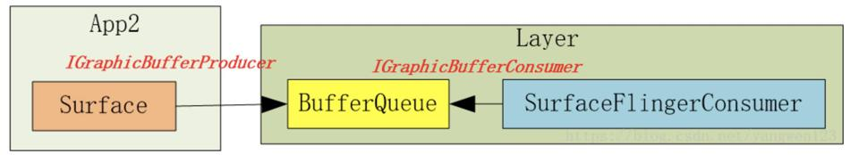

1. BufferQueue
1.1. BufferQueue的创建
在创建Layer对象过程中：frameworks/native/services/surfaceflinger/BufferQueueLayer.cpp
BufferQueueLayer::BufferQueueLayer(const LayerCreationArgs& args) : BufferLayer(args) {}
void BufferQueueLayer::onFirstRef() {
BufferLayer::onFirstRef();
sp<IGraphicBufferProducer> producer;// 类型是BufferQueueProducer
sp<IGraphicBufferConsumer> consumer;// 类型是BufferQueueConsumer
mFlinger->getFactory().createBufferQueue(&producer, &consumer, true);
// 类型是MonitoredProducer
mProducer = mFlinger->getFactory().createMonitoredProducer(producer, mFlinger, this);
// 类型是BufferLayerConsumer
mConsumer = mFlinger->getFactory().createBufferLayerConsumer(consumer, mFlinger->getRenderEngine(), mTextureName, this);
// 。。。
mContentsChangedListener = new ContentsChangedListener(this);
mConsumer->setContentsChangedListener(mContentsChangedListener);
// ...
}
frameworks/native/services/surfaceflinger/SurfaceFlingerDefaultFactory.cpp 中间过程代码略
frameworks/native/libs/gui/BufferQueue.cpp
void BufferQueue::createBufferQueue(sp<IGraphicBufferProducer>* outProducer,
sp<IGraphicBufferConsumer>* outConsumer,
bool consumerIsSurfaceFlinger) {
// ...
sp<BufferQueueCore> core(new BufferQueueCore());
// ...
sp<IGraphicBufferProducer> producer(new BufferQueueProducer(core, consumerIsSurfaceFlinger));
// ...
sp<IGraphicBufferConsumer> consumer(new BufferQueueConsumer(core));
// ...
*outProducer = producer;
*outConsumer = consumer;
}
1.2. 生产者IGraphicBufferProducer
IGraphicBufferProducer的调用主要在Surface的lock和unlock操作中（见Surface系统 上）。
1.2.1. dequeueBuffer
frameworks/native/libs/gui/include/gui/IGraphicBufferProducer.h
客户端类型：BpGraphicBufferProducer （代码也在IGraphicBufferProducer.cpp中）
virtual status_t dequeueBuffer(int* buf, sp<Fence>* fence, uint32_t width, uint32_t height, PixelFormat format, uint64_t usage, uint64_t* outBufferAge, FrameEventHistoryDelta* outTimestamps) {
// 。。。
return result;
}
通过Binder传输到SurfaceFlinger进程中。
服务端类型：BnGraphicBufferProducer （代码也在IGraphicBufferProducer.cpp中）
status_t BnGraphicBufferProducer::onTransact(uint32_t code, const Parcel& data, Parcel* reply, uint32_t flags) {
switch(code) {
// ...
case DEQUEUE_BUFFER: {
// ...
// 在服务进程中调用了dequeueBuffer
int result = dequeueBuffer(&buf, &fence, width, height, format, usage, &bufferAge, getTimestamps ? &frameTimestamps : nullptr);
// ...
reply->writeInt32(result);
return NO_ERROR;
}
// ...
}
}
最终调用了BufferQueueProducer的dequeueBuffer frameworks/native/libs/gui/BufferQueueProducer.cpp
status_t BufferQueueProducer::dequeueBuffer(int* outSlot, sp<android::Fence>* outFence, uint32_t width, uint32_t height, PixelFormat format, uint64_t usage, uint64_t* outBufferAge, FrameEventHistoryDelta* outTimestamps) {
// ...
{ // Autolock scope
//. ..
int found = BufferItem::INVALID_BUFFER_SLOT;
while (found == BufferItem::INVALID_BUFFER_SLOT) {
//1. 寻找可用的Slot，可用指Buffer状态为FREE
status_t status = waitForFreeSlotThenRelock(FreeSlotCaller::Dequeue, lock, &found);
// ...
const sp<GraphicBuffer>& buffer(mSlots[found].mGraphicBuffer);
// ...
}
// ...
*outSlot = found;
// 。。。
//2.找到可用的Slot，将Buffer状态设置为DEQUEUED，由于步骤1找到的Slot状态为FREE，因此这一步完成了FREE到DEQUEUED的状态切换
mSlots[found].mBufferState.dequeue();
//3. 找到的Slot如果需要申请GraphicBuffer，则申请GraphicBuffer，这里采用了懒加载机制，如果内存没有申请，申请内存放在生产者来处理
if ((buffer == nullptr) || buffer->needsReallocation(width, height, format, BQ_LAYER_COUNT, usage)) {
// ...
}
// ...
}
// ...
return returnFlags;
}
TODO waitForFreeSlotThenRelock分析
1.2.2. requestBuffer
在Surface的lock中，调用完dequeueBuffer后又调用了requestBuffer。
status_t BufferQueueProducer::requestBuffer(int slot, sp<GraphicBuffer>* buf) {
// 。。。
*buf = mSlots[slot].mGraphicBuffer;
return NO_ERROR;
}
requestBuffer的逻辑比较简单，在dequeueBuffer中找到了可用得到slot，通过索引来获取GraphicBuffer。
1.2.3. queueBuffer
在Surface的unlock中，会调用queueBuffer。
status_t BufferQueueProducer::queueBuffer(int slot, const QueueBufferInput &input, QueueBufferOutput *output) {
// ...
sp<IConsumerListener> frameAvailableListener;
sp<IConsumerListener> frameReplacedListener;
// ...
{
// ...
const sp<GraphicBuffer>& graphicBuffer(mSlots[slot].mGraphicBuffer);
// ...
// 将Buffer状态扭转成QUEUED，此步完成了Buffer的状态由DEQUEUED到QUEUED的过程
mSlots[slot].mBufferState.queue();
// ...
if (mCore->mQueue.empty()) {
// buffer入列
mCore->mQueue.push_back(item);
frameAvailableListener = mCore->mConsumerListener;
}
// ...
}
// ...
{
// 消费者回调
if (frameAvailableListener != nullptr) {
frameAvailableListener->onFrameAvailable(item);
} else if (frameReplacedListener != nullptr) {
frameReplacedListener->onFrameReplaced(item);
}
// ...
}
// ...
return NO_ERROR;
}
1.3. 消费者IGraphicBufferConsumer
1.3.1. BufferLayerConsumer的创建
BufferQueue的创建隔得远，再看一遍：
BufferQueueLayer::BufferQueueLayer(const LayerCreationArgs& args) : BufferLayer(args) {}
void BufferQueueLayer::onFirstRef() {
BufferLayer::onFirstRef();
sp<IGraphicBufferProducer> producer;// 类型是BufferQueueProducer
sp<IGraphicBufferConsumer> consumer;// 类型是BufferQueueConsumer
mFlinger->getFactory().createBufferQueue(&producer, &consumer, true);
// 类型是MonitoredProducer
mProducer = mFlinger->getFactory().createMonitoredProducer(producer, mFlinger, this);
// 类型是BufferLayerConsumer
mConsumer = mFlinger->getFactory().createBufferLayerConsumer(consumer, mFlinger->getRenderEngine(), mTextureName, this);
// 。。。
mContentsChangedListener = new ContentsChangedListener(this);
mConsumer->setContentsChangedListener(mContentsChangedListener);
// ...
}
在BufferLayerConsumer的构造函数中会调用父类ConsumerBase的构造函数
BufferLayerConsumer::BufferLayerConsumer(const sp<IGraphicBufferConsumer>& bq, renderengine::RenderEngine& engine, uint32_t tex, Layer* layer)
: ConsumerBase(bq, false),
// ...
ConsumerBase::ConsumerBase(const sp<IGraphicBufferConsumer>& bufferQueue, bool controlledByApp) :
mAbandoned(false),
mConsumer(bufferQueue),// mConsumer的类型是BufferQueueConsumer
mPrevFinalReleaseFence(Fence::NO_FENCE) {
// ...
wp<ConsumerListener> listener = static_cast<ConsumerListener*>(this);
sp<IConsumerListener> proxy = new BufferQueue::ProxyConsumerListener(listener);
status_t err = mConsumer->consumerConnect(proxy, controlledByApp);
// 。。。
}
1.3.2. 消费者回调设置
status_t BufferQueueConsumer::connect(const sp<IConsumerListener>& consumerListener, bool controlledByApp) {
// ...
mCore->mConsumerListener = consumerListener;
// ...
return NO_ERROR;
}
当生产者queueBuffer触发回调时，回调对象就是这个consumerListener：
status_t BufferQueueProducer::queueBuffer(int slot, const QueueBufferInput &input, QueueBufferOutput *output) {
// ...
sp<IConsumerListener> frameAvailableListener;
// ...
frameAvailableListener = mCore->mConsumerListener;
// ...
if (frameAvailableListener != nullptr) {
frameAvailableListener->onFrameAvailable(item);
}
// ...
return NO_ERROR;
}
consumerListener（类型是ConsumerBase）的onFrameAvailable：
void ConsumerBase::onFrameAvailable(const BufferItem& item) {
// ...
sp<FrameAvailableListener> listener;
{
Mutex::Autolock lock(mFrameAvailableMutex);
listener = mFrameAvailableListener.promote();// promote函数是将wp升级为sp
}
if (listener != nullptr) {
// ...
listener->onFrameAvailable(item);
}
}
可以看到，ConsumerBase的回调并不是真正的实现，真正的实现在哪呢？看一下mFrameAvailableListener的赋值，在BufferQueueLayer的创建中：
BufferQueueLayer::BufferQueueLayer(const LayerCreationArgs& args) : BufferLayer(args) {}
void BufferQueueLayer::onFirstRef() {
// ...
sp<IGraphicBufferConsumer> consumer;// 类型是BufferQueueConsumer
// ...
// 类型是BufferLayerConsumer
mConsumer = mFlinger->getFactory().createBufferLayerConsumer(consumer, mFlinger->getRenderEngine(), mTextureName, this);
// 。。。
mContentsChangedListener = new ContentsChangedListener(this);
mConsumer->setContentsChangedListener(mContentsChangedListener);
// ...
}
setContentsChangedListener：
void ConsumerBase::setFrameAvailableListener(const wp<FrameAvailableListener>& listener) {
// ...
mFrameAvailableListener = listener;
}
所以消费者回调的具体实现类型是BufferQueueLayer。
void BufferQueueLayer::onFrameAvailable(const BufferItem& item) {
// ...
mFlinger->signalLayerUpdate();
mConsumer->onBufferAvailable(item);
}
signalLayerUpdate内部会触发SF的handlePageFlip。
1.3.3. acquireBuffer
status_t BufferQueueConsumer::acquireBuffer(BufferItem* outBuffer, nsecs_t expectedPresent, uint64_t maxFrameNumber) {
// ...
sp<IProducerListener> listener;
{
// 取出元素
// 更新Slot的状态为ACQUIRED
mSlots[slot].mBufferState.acquire();
// ...
}
if (listener != nullptr) {
for (int i = 0; i < numDroppedBuffers; ++i) {
// 回调
listener->onBufferReleased();
}
}
return NO_ERROR;
}
1.3.4. releaseBuffer
消费者获取到Slot后开始消费数据（典型的消费如SurfaceFlinger的UI合成），消费完毕后，需要告知BufferQueueCore这个Slot被消费者消费完毕了，可以给生产者重新生产数据，releaseBuffer流程如下：
status_t BufferQueueConsumer::releaseBuffer(int slot, uint64_t frameNumber, const sp<Fence>& releaseFence, EGLDisplay eglDisplay, EGLSyncKHR eglFence) {
// ...
sp<IProducerListener> listener;
{
// ...
// 将Slot的状态扭为RELEASE
mSlots[slot].mBufferState.release();
// ...
if (mCore->mBufferReleasedCbEnabled) {
listener = mCore->mConnectedProducerListener;
}
// ...
}
// 回调生产者
if (listener != nullptr) {
listener->onBufferReleased();
}
return NO_ERROR;
}
1.4. 小结
- BufferQueue 可以认为BufferQueue是一个服务中心，IGraphicBufferProducer和IGraphicBufferConsumer 所需要使用的buffer必须要通过它来管理。
- IGraphicBufferProducer IGraphicBufferProducer就是“填充”buffer空间的人，通常情况下是应用程序。因为应用程序不断地刷新UI，从而将产生的显示数据源源不断地写到buffer中。当IGraphicBufferProducer需要使用一块buffer时，它首先会向BufferQueue发起dequeueBuffer申请，然后才能对指定的buffer进行操作。此时buffer就只属于IGraphicBufferProducer一个人的了，它可以对buffer进行任何必要的操作，而IGraphicBufferConsumer此刻绝不能操作这块buffer。当IGraphicBufferProducer认为一块buffer已经写入完成后，它进一步调用queueBuffer函数。从字面上看这个函数是“入列”的意思，形象地表达了buffer此时的操作，把buffer归还到BufferQueue的队列中。一旦queue成功后，buffer的owner也就随之改变为BufferQueue了。
- IGraphicBufferConsumer IGraphicBufferConsumer是与IGraphicBufferProducer相对应的，它的操作同样受到BufferQueue的管控。当一块buffer已经就绪后，IGraphicBufferConsumer就可以开始工作了。

2. SurfaceFlinger进程的启动
和书中说的不同，SurfaceFlinger单独放在了一个进程。
surfaceflinger进程对应的配置不是在init.rc中，而是在surfaceflinger.rc中，对应的main文件：frameworks/native/services/surfaceflinger/main_surfaceflinger.cpp
int main(int, char**) {
// ...
// 创建SurfaceFlinger对象，SurfaceFlinger的构造函数里没有复杂逻辑
// instantiate surfaceflinger
sp<SurfaceFlinger> flinger = surfaceflinger::createSurfaceFlinger();
// ...
// 执行SurfaceFlinger的init函数，init函数也没有复杂逻辑
// initialize before clients can connect
flinger->init();
// 添加系统服务
// publish surface flinger
sp<IServiceManager> sm(defaultServiceManager());
sm->addService(String16(SurfaceFlinger::getServiceName()), flinger, false,
IServiceManager::DUMP_FLAG_PRIORITY_CRITICAL | IServiceManager::DUMP_FLAG_PROTO);
// 执行SurfaceFlinger的run函数
// ...
// run surface flinger in this thread
flinger->run();
return 0;
}
frameworks/native/services/surfaceflinger/SurfaceFlinger.cpp
在SurfaceFlinger的其他方法之前，onFirstRef方法会被调用，onFirstRef方法如下：
void SurfaceFlinger::onFirstRef() {
mEventQueue->init(this);
}
void MessageQueue::init(const sp<SurfaceFlinger>& flinger) {
mFlinger = flinger;
mLooper = new Looper(true);
mHandler = new Handler(*this);
}
创建了类似Android Java层中Handler的一套消息机制，最后调用SurfaceFlinger的run函数等待消息。
void SurfaceFlinger::run() {
while (true) {
mEventQueue->waitMessage();
}
}
2.1. 小结
SurfaceFlinger进程的启动主要是这几步：
- 开机启动SurfaceFlinger进程。
- 创建SurfaceFlinger对象。
- 调用SurfaceFlinger的init函数。
- 调用SurfaceFlinger的run函数，等待Message。
3. EventThread
3.1. EventThread的创建
frameworks/native/services/surfaceflinger/SurfaceFlinger.cpp
void SurfaceFlinger::init() {
// ...
processDisplayHotplugEventsLocked();
// ...
}
void SurfaceFlinger::processDisplayHotplugEventsLocked() {
// ...
initScheduler(displayId);
// ...
}
void SurfaceFlinger::initScheduler(DisplayId primaryDisplayId) {
// ...
// start the EventThread
mScheduler = getFactory().createScheduler([this](bool enabled) { setPrimaryVsyncEnabled(enabled); }, *mRefreshRateConfigs, *this);
mAppConnectionHandle = mScheduler->createConnection("app", mPhaseConfiguration->getCurrentOffsets().late.app, impl::EventThread::InterceptVSyncsCallback());
mSfConnectionHandle = mScheduler->createConnection("sf", mPhaseConfiguration->getCurrentOffsets().late.sf, [this](nsecs_t timestamp) { mInterceptor->saveVSyncEvent(timestamp); });
mEventQueue->setEventConnection(mScheduler->getEventConnection(mSfConnectionHandle));
// ...
}
frameworks/native/services/surfaceflinger/Scheduler/Scheduler.cpp
Scheduler::ConnectionHandle Scheduler::createConnection(const char* connectionName, nsecs_t phaseOffsetNs, impl::EventThread::InterceptVSyncsCallback interceptCallback) {
auto vsyncSource = makePrimaryDispSyncSource(connectionName, phaseOffsetNs);
auto eventThread = std::make_unique<impl::EventThread>(std::move(vsyncSource), std::move(interceptCallback));
return createConnection(std::move(eventThread));
}
Scheduler::ConnectionHandle Scheduler::createConnection(std::unique_ptr<EventThread> eventThread) {
const ConnectionHandle handle = ConnectionHandle{mNextConnectionHandleId++};
// ...
auto connection = createConnectionInternal(eventThread.get(), ISurfaceComposer::eConfigChangedSuppress);
mConnections.emplace(handle, Connection{connection, std::move(eventThread)});
return handle;
}
sp<EventThreadConnection> Scheduler::createConnectionInternal(EventThread* eventThread, ISurfaceComposer::ConfigChanged configChanged) {
return eventThread->createEventConnection([&] { resync(); }, configChanged);
}
frameworks/native/services/surfaceflinger/Scheduler/EventThread.cpp
sp<EventThreadConnection> EventThread::createEventConnection(ResyncCallback resyncCallback, ISurfaceComposer::ConfigChanged configChanged) const {
return new EventThreadConnection(const_cast<EventThread*>(this), std::move(resyncCallback),configChanged);
}
小结：在SF的初始化过程中，分别创建了APP和SF的EventThread，以及对应的EventThreadConnection。
因为 Vsync 是通知 SurfaceFlinger 刷新的信号，如果 App 信号和 SF 信号是同步的话，那么就会造成系统工作的拥挤，按照正常的思路，我们应该是希望处理 App 事务和处理 SF 事务是错开的，所以这里用了两个线程来分开处理。并且这两个线程还采用了不同的时间偏移量。
作者：YuLong 链接：https://juejin.cn/post/7045996528942448648 来源：稀土掘金 著作权归作者所有。商业转载请联系作者获得授权，非商业转载请注明出处。
3.2. setEventConnection
void SurfaceFlinger::initScheduler(DisplayId primaryDisplayId) {
// ...
mEventQueue->setEventConnection(mScheduler->getEventConnection(mSfConnectionHandle));
// ...
}
在SF的initScheduler中会调用MessageQueue的setEventConnection。
gui::BitTube mEventTube;
void MessageQueue::setEventConnection(const sp<EventThreadConnection>& connection) {
if (mEventTube.getFd() >= 0) {
mLooper->removeFd(mEventTube.getFd());
}
mEvents = connection;
mEvents->stealReceiveChannel(&mEventTube);
mLooper->addFd(mEventTube.getFd(), 0, Looper::EVENT_INPUT, MessageQueue::cb_eventReceiver, this);
}
创建完 EventThread 之后，就将 SurfaceFlinger 的 EventConnection 设置进了 EventQueue。
接收者实际上是SF的MessageQueue，cb_eventReceiver就是接收的回调。
3.3. EventThread的运行
EventThread::EventThread(std::unique_ptr<VSyncSource> vsyncSource,
InterceptVSyncsCallback interceptVSyncsCallback)
: mVSyncSource(std::move(vsyncSource)),
mInterceptVSyncsCallback(std::move(interceptVSyncsCallback)),
mThreadName(mVSyncSource->getName()) {
mVSyncSource->setCallback(this);
mThread = std::thread([this]() NO_THREAD_SAFETY_ANALYSIS {
std::unique_lock<std::mutex> lock(mMutex);
threadMain(lock);
});
// 。。。
}
threadMain会开启一个死循环，这个循环会一直处理事件：
void EventThread::threadMain(std::unique_lock<std::mutex>& lock) {
DisplayEventConsumers consumers;
while (mState != State::Quit) {
std::optional<DisplayEventReceiver::Event> event;
// 。。。
// 从 mPendingEvents 头部获取 VSYNC 事件 Event 。
event = mPendingEvents.front();
mPendingEvents.pop_front();
// 。。。
// 找到需要消费此event的connection
// 。。。
// 分发此event
if (!consumers.empty()) {
dispatchEvent(*event, consumers);
consumers.clear();
}
// 。。。
// Wait for event or client registration/request.
if (mState == State::Idle) {
// 通过条件变量mCondition让线程陷入等待
mCondition.wait(lock);
} else {
// Generate a fake VSYNC after a long timeout in case the driver stalls. When the display is off, keep feeding clients at 60 Hz.
// 如果没有事件，那么创建一个假的VSync发送给请求者。
// 。。。
}
}
}
threadMain主要就是处理事件。
3.4. 事件分发
在EventThread的消息处理循环中，找到了event，并给消费者分发此event：
void EventThread::dispatchEvent(const DisplayEventReceiver::Event& event,
const DisplayEventConsumers& consumers) {
for (const auto& consumer : consumers) {
switch (consumer->postEvent(event)) {
// ...
}
}
}
consumer的具体类型是EventThreadConnection：
using DisplayEventConsumers = std::vector<sp<EventThreadConnection>>;
status_t EventThreadConnection::postEvent(const DisplayEventReceiver::Event& event) {
ssize_t size = DisplayEventReceiver::sendEvents(&mChannel, &event, 1);
return size < 0 ? status_t(size) : status_t(NO_ERROR);
}
frameworks/native/libs/gui/DisplayEventReceiver.cpp
ssize_t DisplayEventReceiver::sendEvents(gui::BitTube* dataChannel,
Event const* events, size_t count)
{
return gui::BitTube::sendObjects(dataChannel, events, count);
}
事件的分发会通过Channel来完成。
BitTube 是 Android 中封装了的 socketpair，它是用于 socket 通信的。也就是说这里通过 socket 通信的方式，将事件从 EventThreadConnection 所在的进程传递到了 mChannel 接收的进程。
4. SF消息循环
涉及类型：MessageQueue、Looper、Handler。在SF的初始化过程中会创建这些对象。
void SurfaceFlinger::onFirstRef() {
mEventQueue->init(this);
}
void MessageQueue::init(const sp<SurfaceFlinger>& flinger) {
mFlinger = flinger;
mLooper = new Looper(true);
mHandler = new Handler(*this);
}
4.1. waitMessage
void SurfaceFlinger::run() {
while (true) {
mEventQueue->waitMessage();
}
}
在一个死循环中，SF一直等待消息，当消息来临时，进行处理：
void MessageQueue::waitMessage() {
do {
IPCThreadState::self()->flushCommands();
int32_t ret = mLooper->pollOnce(-1);
// ...
} while (true);
}
int Looper::pollOnce(int timeoutMillis, int* outFd, int* outEvents, void** outData) {
int result = 0;
for (;;) {
// ...
result = pollInner(timeoutMillis);
}
}
int Looper::pollInner(int timeoutMillis) {
// ...
while (mMessageEnvelopes.size() != 0) {
// ...
const MessageEnvelope& messageEnvelope = mMessageEnvelopes.itemAt(0);
// ...
sp<MessageHandler> handler = messageEnvelope.handler;
Message message = messageEnvelope.message;
// ...
handler->handleMessage(message);
// ...
}
// ...
return result;
}
和Java中的Handler类似，MessageQueue处理消息时，取出一个消息，获取对应的Handler，并交给其进行处理。
frameworks/native/services/surfaceflinger/Scheduler/MessageQueue.cpp
void MessageQueue::Handler::handleMessage(const Message& message) {
switch (message.what) {
case INVALIDATE:
mEventMask.fetch_and(~eventMaskInvalidate);
mQueue.mFlinger->onMessageReceived(message.what, mVsyncId, mExpectedVSyncTime);
break;
case REFRESH:
mEventMask.fetch_and(~eventMaskRefresh);
mQueue.mFlinger->onMessageReceived(message.what, mVsyncId, mExpectedVSyncTime);
break;
}
}
frameworks/native/services/surfaceflinger/SurfaceFlinger.cpp
void SurfaceFlinger::onMessageReceived(int32_t what, int64_t vsyncId, nsecs_t expectedVSyncTime) {
switch (what) {
case MessageQueue::INVALIDATE: {
onMessageInvalidate(vsyncId, expectedVSyncTime);
break;
}
case MessageQueue::REFRESH: {
onMessageRefresh();
break;
}
}
}
4.2. postMessage
void MessageQueue::postMessage(sp<MessageHandler>&& handler) {
mLooper->sendMessage(handler, Message());
}
void Looper::sendMessage(const sp<MessageHandler>& handler, const Message& message) {
nsecs_t now = systemTime(SYSTEM_TIME_MONOTONIC);
sendMessageAtTime(now, handler, message);
}
void Looper::sendMessageAtTime(nsecs_t uptime, const sp<MessageHandler>& handler,
const Message& message) {
// ...
MessageEnvelope messageEnvelope(uptime, handler, message);
mMessageEnvelopes.insertAt(messageEnvelope, i, 1);
// ...
}
4.3. 小结
SF中的消息循环和Java层中的Handler类似：
- post一个msg到MessageQueue中，会将msg封装成一个MessageEnvelope，并放入到mMessageEnvelopes中。
- 处理消息时，从mMessageEnvelopes中取出一个MessageEnvelope，并从MessageEnvelope中获取msg对应的Handler，交其处理。
5. SF消息接收：onMessageReceived
void SurfaceFlinger::onMessageReceived(int32_t what, int64_t vsyncId, nsecs_t expectedVSyncTime) {
switch (what) {
case MessageQueue::INVALIDATE: {
onMessageInvalidate(vsyncId, expectedVSyncTime);
break;
}
case MessageQueue::REFRESH: {
onMessageRefresh();
break;
}
}
}
onMessageInvalidate内部会调用handlePageFlip来处理Layer的合成，以及BufferQueue中消费者部分。
onMessageRefresh会合并以及渲染输出。
6. Choreographer
Choreographer：编舞者，指对CPU/GPU绘制的指导，收到VSync信号才开始绘制，保证绘制拥有完整的16.6ms。通常应用层不会直接使用Choreographer，而是使用更高级的API，如View.invalidate()等，可以通过Choreographer来监控应用的帧率。
6.1. Choreographer实例化
ViewRootImpl
// ViewRootImpl在WindowManager.addView时创建
public ViewRootImpl(Context context, Display display) {
// ...
mChoreographer = Choreographer.getInstance();
// ...
}
Choreographer
private static final ThreadLocal<Choreographer> sThreadInstance =
new ThreadLocal<Choreographer>() {
@Override
protected Choreographer initialValue() {
Looper looper = Looper.myLooper();
if (looper == null) {
throw new IllegalStateException("The current thread must have a looper!");
}
Choreographer choreographer = new Choreographer(looper, VSYNC_SOURCE_APP);
if (looper == Looper.getMainLooper()) {
mMainInstance = choreographer;
}
return choreographer;
}
};
public static Choreographer getInstance() {
return sThreadInstance.get();
}
Choreographer是线程单例，由ThreadLocal实现。
// 默认true
private static final boolean USE_VSYNC = SystemProperties.getBoolean(
"debug.choreographer.vsync", true);
// VSync事件接收器
private final FrameDisplayEventReceiver mDisplayEventReceiver;
public static final int CALLBACK_INPUT = 0;
public static final int CALLBACK_ANIMATION = 1;
public static final int CALLBACK_INSETS_ANIMATION = 2;
public static final int CALLBACK_TRAVERSAL = 3;
public static final int CALLBACK_COMMIT = 4;
private static final int CALLBACK_LAST = CALLBACK_COMMIT;
private final CallbackQueue[] mCallbackQueues;
private Choreographer(Looper looper, int vsyncSource) {
mLooper = looper;
mHandler = new FrameHandler(looper);
mDisplayEventReceiver = USE_VSYNC
? new FrameDisplayEventReceiver(looper, vsyncSource)
: null;
mLastFrameTimeNanos = Long.MIN_VALUE;
// 计算一帧的时间，60帧即16.6ms
mFrameIntervalNanos = (long)(1000000000 / getRefreshRate());
mCallbackQueues = new CallbackQueue[CALLBACK_LAST + 1];
for (int i = 0; i <= CALLBACK_LAST; i++) {
mCallbackQueues[i] = new CallbackQueue();
}
// b/68769804: For low FPS experiments.
setFPSDivisor(SystemProperties.getInt(ThreadedRenderer.DEBUG_FPS_DIVISOR, 1));
}
6.1.1. callbackType
/**
* Callback type: Input callback. Runs first.
*/
public static final int CALLBACK_INPUT = 0;
/**
* Callback type: Animation callback. Runs before {@link #CALLBACK_INSETS_ANIMATION}.
*/
public static final int CALLBACK_ANIMATION = 1;
/**
* Callback type: Animation callback to handle inset updates. This is separate from
* {@link #CALLBACK_ANIMATION} as we need to "gather" all inset animation updates via
* {@link WindowInsetsAnimationController#setInsetsAndAlpha(Insets, float, float)} for multiple
* ongoing animations but then update the whole view system with a single callback to
* {@link View#dispatchWindowInsetsAnimationProgress} that contains all the combined updated
* insets.
* <p>
* Both input and animation may change insets, so we need to run this after these callbacks, but
* before traversals.
* <p>
* Runs before traversals.
* @hide
*/
public static final int CALLBACK_INSETS_ANIMATION = 2;
/**
* Callback type: Traversal callback. Handles layout and draw. Runs
* after all other asynchronous messages have been handled.
* @hide
*/
public static final int CALLBACK_TRAVERSAL = 3;
/**
* Callback type: Commit callback. Handles post-draw operations for the frame.
* Runs after traversal completes. The {@link #getFrameTime() frame time} reported
* during this callback may be updated to reflect delays that occurred while
* traversals were in progress in case heavy layout operations caused some frames
* to be skipped. The frame time reported during this callback provides a better
* estimate of the start time of the frame in which animations (and other updates
* to the view hierarchy state) actually took effect.
* @hide
*/
public static final int CALLBACK_COMMIT = 4;
private static final int CALLBACK_LAST = CALLBACK_COMMIT;
这四种类型的任务存入对应类型的CallbackQueue中，每当收到VSYNC信号时，Choreographer将按顺序处理这些类型的任务。
6.1.2. FrameHandler
FrameHandler用来处理异步消息：
private final class FrameHandler extends Handler {
public FrameHandler(Looper looper) {
super(looper);
}
@Override
public void handleMessage(Message msg) {
switch (msg.what) {
case MSG_DO_FRAME:
doFrame(System.nanoTime(), 0);
break;
case MSG_DO_SCHEDULE_VSYNC:
doScheduleVsync();
break;
case MSG_DO_SCHEDULE_CALLBACK:
doScheduleCallback(msg.arg1);
break;
}
}
}
6.1.3. 小结
- Choreographer是线程单例，一个线程对应一个对象。
- Choreographer内部的FrameHandler处理异步消息。
6.2. Vsync信号注册
6.2.1. FrameDisplayEventReceiver
mDisplayEventReceiver 是 FrameDisplayEventReceiver 类型的实例，在Choreographer构造方法中实例化，其父类为 DisplayEventReceiver。
private final class FrameDisplayEventReceiver extends DisplayEventReceiver
implements Runnable {
// ....
public FrameDisplayEventReceiver(Looper looper, int vsyncSource) {
super(looper, vsyncSource, CONFIG_CHANGED_EVENT_SUPPRESS);
}
@Override
public void onVsync(long timestampNanos, long physicalDisplayId, int frame) {
// ...
Message msg = Message.obtain(mHandler, this);
msg.setAsynchronous(true);
mHandler.sendMessageAtTime(msg, timestampNanos / TimeUtils.NANOS_PER_MS);
}
@Override
public void run() {
mHavePendingVsync = false;
doFrame(mTimestampNanos, mFrame);
}
}
6.2.2. DisplayEventReceiver
public abstract class DisplayEventReceiver {
// ....
public DisplayEventReceiver(Looper looper, int vsyncSource, int configChanged) {
if (looper == null) {
throw new IllegalArgumentException("looper must not be null");
}
mMessageQueue = looper.getQueue();
mReceiverPtr = nativeInit(new WeakReference<DisplayEventReceiver>(this), mMessageQueue, vsyncSource, configChanged);
mCloseGuard.open("dispose");
}
private static native long nativeInit(WeakReference<DisplayEventReceiver> receiver, MessageQueue messageQueue, int vsyncSource, int configChanged);
}
6.2.3. nativeInit
nativeInit是一个native方法，其实现在frameworks/base/core/jni/android_view_DisplayEventReceiver.cpp中：
static jlong nativeInit(JNIEnv* env, jclass clazz, jobject receiverWeak, jobject messageQueueObj, jint vsyncSource, jint eventRegistration) {
sp<MessageQueue> messageQueue = android_os_MessageQueue_getMessageQueue(env, messageQueueObj);
// ...
sp<NativeDisplayEventReceiver> receiver =
new NativeDisplayEventReceiver(env, receiverWeak, messageQueue, vsyncSource, eventRegistration);
status_t status = receiver->initialize();
// ...
receiver->incStrong(gDisplayEventReceiverClassInfo.clazz); // retain a reference for the object
return reinterpret_cast<jlong>(receiver.get());
}
status_t DisplayEventDispatcher::initialize() {
status_t result = mReceiver.initCheck();
// 。。。
int rc = mLooper->addFd(mReceiver.getFd(), 0, Looper::EVENT_INPUT, this, NULL);
// 。。。
return OK;
}
std::unique_ptr<gui::BitTube> mDataChannel;
int DisplayEventReceiver::getFd() const {
if (mDataChannel == nullptr) return mInitError.has_value() ? mInitError.value() : NO_INIT;
return mDataChannel->getFd();
}
DisplayEventReceiver::DisplayEventReceiver(
ISurfaceComposer::VsyncSource vsyncSource,
ISurfaceComposer::EventRegistrationFlags eventRegistration) {
sp<ISurfaceComposer> sf(ComposerService::getComposerService());
if (sf != nullptr) {
mEventConnection = sf->createDisplayEventConnection(vsyncSource, eventRegistration);
if (mEventConnection != nullptr) {
// 创建BitTube
mDataChannel = std::make_unique<gui::BitTube>();
const auto status = mEventConnection->stealReceiveChannel(mDataChannel.get());
if (!status.isOk()) {
ALOGE("stealReceiveChannel failed: %s", status.toString8().c_str());
mInitError = std::make_optional<status_t>(status.transactionError());
mDataChannel.reset();
mEventConnection.clear();
}
}
}
}
6.2.4. 小结
- Choreographer创建时会创建一个DisplayEventReceiver。
- 在native的DisplayEventReceiver创建中，会通过BitTube与SF建立联系。
- BitTube内部通过socket来实现全双工通讯。在 BitTube 对象中有两个文件描述符：mReceiveFd 和 mSendFd，以及 read 和 write 方法分别用来进行读写操作。
- 创建完DisplayEventReceiver对象后再初始化。
mLooper->addFd(mReceiver.getFd(), 0, Looper::EVENT_INPUT, this, NULL)用来监听 mReceiver 所获取的文件句柄，当有存在对 Vsync 信号感兴趣的连接且接收到了Vsync 信号时，会发送数据到 mReceiver，然后回调 DisplayEventDispatcher 中的 handleEvent 方法。
6.3. 接收Vsync
6.3.1. handleEvent
int DisplayEventDispatcher::handleEvent(int, int events, void*) {
// ....
if (processPendingEvents(&vsyncTimestamp, &vsyncDisplayId, &vsyncCount, &vsyncEventData)) {
ALOGV("dispatcher %p ~ Vsync pulse: timestamp=%" PRId64
", displayId=%s, count=%d, vsyncId=%" PRId64,
this, ns2ms(vsyncTimestamp), to_string(vsyncDisplayId).c_str(), vsyncCount,
vsyncEventData.preferredVsyncId());
mWaitingForVsync = false;
mLastVsyncCount = vsyncCount;
dispatchVsync(vsyncTimestamp, vsyncDisplayId, vsyncCount, vsyncEventData);
}
if (mWaitingForVsync) {
const nsecs_t currentTime = systemTime(SYSTEM_TIME_MONOTONIC);
const nsecs_t vsyncScheduleDelay = currentTime - mLastScheduleVsyncTime;
if (vsyncScheduleDelay > WAITING_FOR_VSYNC_TIMEOUT) {
ALOGW("Vsync time out! vsyncScheduleDelay=%" PRId64 "ms", ns2ms(vsyncScheduleDelay));
mWaitingForVsync = false;
dispatchVsync(currentTime, vsyncDisplayId /* displayId is not used */,
++mLastVsyncCount, vsyncEventData /* empty data */);
}
}
return 1; // keep the callback
}
6.3.2. dispatchVsync
void NativeDisplayEventReceiver::dispatchVsync(nsecs_t timestamp, PhysicalDisplayId displayId, uint32_t count, VsyncEventData vsyncEventData) {
JNIEnv* env = AndroidRuntime::getJNIEnv();
ScopedLocalRef<jobject> receiverObj(env, GetReferent(env, mReceiverWeakGlobal));
if (receiverObj.get()) {
ALOGV("receiver %p ~ Invoking vsync handler.", this);
jobject javaVsyncEventData = createJavaVsyncEventData(env, vsyncEventData);
env->CallVoidMethod(receiverObj.get(), gDisplayEventReceiverClassInfo.dispatchVsync,
timestamp, displayId.value, count, javaVsyncEventData);
ALOGV("receiver %p ~ Returned from vsync handler.", this);
}
mMessageQueue->raiseAndClearException(env, "dispatchVsync");
}
通过jni反射调用Java的DisplayEventReceiver的dispatchVsync。
private void dispatchVsync(long timestampNanos, long physicalDisplayId, int frame) {
onVsync(timestampNanos, physicalDisplayId, frame);
}
6.3.3. onVsync
public void onVsync(long timestampNanos, long physicalDisplayId, int frame) {
// ...
mTimestampNanos = timestampNanos;
mFrame = frame;
Message msg = Message.obtain(mHandler, this);
msg.setAsynchronous(true);
mHandler.sendMessageAtTime(msg, timestampNanos / TimeUtils.NANOS_PER_MS);
}
onVsync发送一个异步消息，具体逻辑在FrameDisplayEventReceiver的run中。
public void run() {
mHavePendingVsync = false;
doFrame(mTimestampNanos, mFrame);
}
doFrame
void doFrame(long frameTimeNanos, int frame) {
final long startNanos;
synchronized (mLock) {
// ...
if (frameTimeNanos < mLastFrameTimeNanos) {
// ...
scheduleVsyncLocked();
return;
}
if (mFPSDivisor > 1) {
long timeSinceVsync = frameTimeNanos - mLastFrameTimeNanos;
if (timeSinceVsync < (mFrameIntervalNanos * mFPSDivisor) && timeSinceVsync > 0) {
scheduleVsyncLocked();
return;
}
}
// ...
}
try {
Trace.traceBegin(Trace.TRACE_TAG_VIEW, "Choreographer#doFrame");
AnimationUtils.lockAnimationClock(frameTimeNanos / TimeUtils.NANOS_PER_MS);
mFrameInfo.markInputHandlingStart();
doCallbacks(Choreographer.CALLBACK_INPUT, frameTimeNanos);
mFrameInfo.markAnimationsStart();
doCallbacks(Choreographer.CALLBACK_ANIMATION, frameTimeNanos);
doCallbacks(Choreographer.CALLBACK_INSETS_ANIMATION, frameTimeNanos);
mFrameInfo.markPerformTraversalsStart();
doCallbacks(Choreographer.CALLBACK_TRAVERSAL, frameTimeNanos);
doCallbacks(Choreographer.CALLBACK_COMMIT, frameTimeNanos);
} finally {
AnimationUtils.unlockAnimationClock();
Trace.traceEnd(Trace.TRACE_TAG_VIEW);
}
// ...
}
6.3.4. doCallbacks
void doCallbacks(int callbackType, long frameTimeNanos) {
CallbackRecord callbacks;
synchronized (mLock) {
// 取出小于当前时间的Callback
final long now = System.nanoTime();
callbacks = mCallbackQueues[callbackType].extractDueCallbacksLocked(
now / TimeUtils.NANOS_PER_MS);
if (callbacks == null) {
return;
}
mCallbacksRunning = true;
// 。。。
}
try {
Trace.traceBegin(Trace.TRACE_TAG_VIEW, CALLBACK_TRACE_TITLES[callbackType]);
// 执行Callback
for (CallbackRecord c = callbacks; c != null; c = c.next) {
// 。。。
c.run(frameTimeNanos);
}
} finally {
synchronized (mLock) {
mCallbacksRunning = false;
do {
final CallbackRecord next = callbacks.next;
recycleCallbackLocked(callbacks);
callbacks = next;
} while (callbacks != null);
}
Trace.traceEnd(Trace.TRACE_TAG_VIEW);
}
}
- 取出小于当前时间的Callback，意味着一个Callback只会执行一次。
- run Callback。
6.3.5. 小结
- 当DisplayEventReceiver接收到Vsync信号时，会发送一个异步消息，用来执行doFrame。
- doFrame主要是执行Callback。
6.4. 再看scheduleTraversals
void scheduleTraversals() {
if (!mTraversalScheduled) {
mTraversalScheduled = true;
mTraversalBarrier = mHandler.getLooper().getQueue().postSyncBarrier();
mChoreographer.postCallback(Choreographer.CALLBACK_TRAVERSAL, mTraversalRunnable, null);
notifyRendererOfFramePending();
pokeDrawLockIfNeeded();
}
}
6.4.1. postCallback
public void postCallback(int callbackType, Runnable action, Object token) {
postCallbackDelayed(callbackType, action, token, 0);
}
public void postCallbackDelayed(int callbackType, Runnable action, Object token, long delayMillis) {
// ...
postCallbackDelayedInternal(callbackType, action, token, delayMillis);
}
private void postCallbackDelayedInternal(int callbackType, Object action, Object token, long delayMillis) {
synchronized (mLock) {
final long now = SystemClock.uptimeMillis();
final long dueTime = now + delayMillis;
// 对应类型的CallbackQueue添加Callback
mCallbackQueues[callbackType].addCallbackLocked(dueTime, action, token);
if (dueTime <= now) {
// 立即执行
scheduleFrameLocked(now);
} else {
Message msg = mHandler.obtainMessage(MSG_DO_SCHEDULE_CALLBACK, action);
msg.arg1 = callbackType;
msg.setAsynchronous(true);
// handleMessage会调用doScheduleCallback(msg.arg1)方法
mHandler.sendMessageAtTime(msg, dueTime);
}
}
}
void doScheduleCallback(int callbackType) {
synchronized (mLock) {
if (!mFrameScheduled) {
final long now = SystemClock.uptimeMillis();
if (mCallbackQueues[callbackType].hasDueCallbacksLocked(now)) {
scheduleFrameLocked(now);
}
}
}
}
可以看到延迟与否都会调用 scheduleFrameLocked 方法。
private void scheduleFrameLocked(long now) {
if (!mFrameScheduled) {
mFrameScheduled = true;
// Android 4.1后默认开启
if (USE_VSYNC) {
// Looper.myLooper() == mLooper
if (isRunningOnLooperThreadLocked()) {
// 当前执行的线程是mLooper所在线程
scheduleVsyncLocked();
} else {
// 否则通过handleMessage会调用doScheduleVsync方法
Message msg = mHandler.obtainMessage(MSG_DO_SCHEDULE_VSYNC);
msg.setAsynchronous(true);
mHandler.sendMessageAtFrontOfQueue(msg);
}
} else {
// private static final long DEFAULT_FRAME_DELAY = 10;
// private static volatile long sFrameDelay = DEFAULT_FRAME_DELAY;
final long nextFrameTime = Math.max(mLastFrameTimeNanos / TimeUtils.NANOS_PER_MS + sFrameDelay, now);
// 会调用doFrame(System.nanoTime(), 0)方法
Message msg = mHandler.obtainMessage(MSG_DO_FRAME);
msg.setAsynchronous(true);
mHandler.sendMessageAtTime(msg, nextFrameTime);
}
}
}
void doScheduleVsync() {
synchronized (mLock) {
if (mFrameScheduled) {
scheduleVsyncLocked();
}
}
}
private void scheduleVsyncLocked() {
mDisplayEventReceiver.scheduleVsync();
}
6.4.2. scheduleVsync
public void scheduleVsync() {
if (mReceiverPtr == 0) {
// ...
} else {
nativeScheduleVsync(mReceiverPtr);
}
}
status_t DisplayEventDispatcher::scheduleVsync() {
if (!mWaitingForVsync) {
// ....
status_t status = mReceiver.requestNextVsync();
// ...
}
return OK;
}
scheduleVsync方法用来请求接收下一次 Vsync 信号，可以唤醒 EventThread 线程，等到 Vsync 信号到来后回调给 APP。
6.4.3. 小结
ViewRootImpl的scheduleTraversals方法会post一个TraversalRunnable，同时请求接收下一次 Vsync 信号。
6.5. 总结
- Choreographer是线程单例，一个线程对应一个对象。
- Choreographer创建时会创建一个DisplayEventReceiver。DisplayEventReceiver在native层会通过BitTube与SF建立联系，用于监听Vsync信号。
- 当有绘制请求时通过 postCallback 方法请求下一次 Vsync 信号。
- 当Vsync信号来临时，会回调 DisplayEventDispatcher 中的 handleEvent 方法。
- handleEvent发送一个异步消息，用来执行doFrame。
- doFrame会执行Callback。
- 这样逻辑就到了ViewRootImpl的performTraversals。
一些结论：
- 只有当 App 注册监听下一个 Vsync 信号后才能接收到 Vsync 到来的回调。如果界面一直保持不变，那么 App 不会去接收每隔 16.6ms 一次的 Vsync 事件，但底层依旧会以这个频率来切换每一帧的画面(也是通过监听 Vsync 信号实现)。即当界面不变时屏幕也会固定每 16.6ms 刷新，但 CPU/GPU 不走绘制流程。
- 当 View 请求刷新时，这个任务并不会马上开始，而是需要等到下一个 Vsync 信号到来时才开始。
- 造成丢帧主要有两个原因：一是遍历绘制 View 树以及计算屏幕数据超过了16.6ms；二是主线程一直在处理其他耗时消息，导致绘制任务迟迟不能开始(同步屏障不能完全解决这个问题)。
- 可通过
Choreographer.getInstance().postFrameCallback()来监听帧率情况。
7. 消费buffer
在BufferQueue的循环中提到，生产者处理完会调用queueBuffer，而queueBuffer会触发消费者的回调：
void BufferQueueLayer::onFrameAvailable(const BufferItem& item) {
// ...
mFlinger->signalLayerUpdate();
mConsumer->onBufferAvailable(item);
}
调用了SF的signalLayerUpdate。
void SurfaceFlinger::signalLayerUpdate() {
// ...
mEventQueue->invalidate();
}
frameworks/native/services/surfaceflinger/Scheduler/MessageQueue.cpp
void MessageQueue::invalidate() {
mEvents->requestNextVsync();
}
frameworks/native/services/surfaceflinger/Scheduler/EventThread.cpp
void EventThreadConnection::requestNextVsync() {
ATRACE_NAME("requestNextVsync");
mEventThread->requestNextVsync(this);
}
frameworks/native/services/surfaceflinger/Scheduler/EventThread.cpp
void EventThread::requestNextVsync(const sp<EventThreadConnection>& connection) {
if (connection->resyncCallback) {
connection->resyncCallback();
}
std::lock_guard<std::mutex> lock(mMutex);
if (connection->vsyncRequest == VSyncRequest::None) {
connection->vsyncRequest = VSyncRequest::Single;
// 主要看这里
mCondition.notify_all();
}
}
mCondition.notify_all();唤醒这个条件变量，那么看一下这个mCondition在哪wait的。
7.1. 再看事件分发
ssize_t DisplayEventReceiver::sendEvents(gui::BitTube* dataChannel, Event const* events, size_t count) {
return gui::BitTube::sendObjects(dataChannel, events, count);
}
ssize_t BitTube::sendObjects(BitTube* tube, void const* events, size_t count, size_t objSize) {
const char* vaddr = reinterpret_cast<const char*>(events);
ssize_t size = tube->write(vaddr, count * objSize);
// ...
return size < 0 ? size : size / static_cast<ssize_t>(objSize);
}
ssize_t BitTube::write(void const* vaddr, size_t size) {
ssize_t err, len;
do {
len = ::send(mSendFd, vaddr, size, MSG_DONTWAIT | MSG_NOSIGNAL);
// cannot return less than size, since we're using SOCK_SEQPACKET
err = len < 0 ? errno : 0;
} while (err == EINTR);
return err == 0 ? len : -err;
}
在BitTube的write函数中，发送了信息，那么另一端就会接收到信息，也就是BitTube的read函数：
ssize_t BitTube::read(void* vaddr, size_t size) {
ssize_t err, len;
do {
len = ::recv(mReceiveFd, vaddr, size, MSG_DONTWAIT);
err = len < 0 ? errno : 0;
} while (err == EINTR);
// ...
return err == 0 ? len : -err;
}
c++的Socket源码不是很熟悉，这里是从原理的角度理解。最终会走到MessageQueue的cb_eventReceiver函数；
7.2. 事件接收
frameworks/native/services/surfaceflinger/Scheduler/MessageQueue.cpp
int MessageQueue::cb_eventReceiver(int fd, int events, void* data) {
MessageQueue* queue = reinterpret_cast<MessageQueue*>(data);
return queue->eventReceiver(fd, events);
}
int MessageQueue::eventReceiver(int /*fd*/, int /*events*/) {
ssize_t n;
DisplayEventReceiver::Event buffer[8];
while ((n = DisplayEventReceiver::getEvents(&mEventTube, buffer, 8)) > 0) {
for (int i = 0; i < n; i++) {
if (buffer[i].header.type == DisplayEventReceiver::DISPLAY_EVENT_VSYNC) {
mHandler->dispatchInvalidate(buffer[i].vsync.expectedVSyncTimestamp);
break;
}
}
}
return 1;
}
frameworks/native/services/surfaceflinger/Scheduler/MessageQueue.cpp
void MessageQueue::Handler::dispatchInvalidate(nsecs_t expectedVSyncTimestamp) {
// ...
mQueue.mLooper->sendMessage(this, Message(MessageQueue::INVALIDATE));
// ...
}
看到了熟悉的函数：Looper::sendMessage。在上面的SF消息循环中，Looper::sendMessage最终会触发SF的handlePageFlip。
7.3. 小结
Vsync信号的处理，即requestNextVsync，最终触发SF的handlePageFlip。
8. handlePageFlip
frameworks/native/services/surfaceflinger/SurfaceFlinger.cpp
bool SurfaceFlinger::handlePageFlip() {
// 。。。
// Store the set of layers that need updates. This set must not change as
// buffers are being latched, as this could result in a deadlock.
// Example: Two producers share the same command stream and:
// 1.) Layer 0 is latched
// 2.) Layer 0 gets a new frame
// 2.) Layer 1 gets a new frame
// 3.) Layer 1 is latched.
// Display is now waiting on Layer 1's frame, which is behind layer 0's
// second frame. But layer 0's second frame could be waiting on display.
mDrawingState.traverse([&](Layer* layer) {
uint32_t trFlags = layer->getTransactionFlags(eTransactionNeeded);
if (trFlags || mForceTransactionDisplayChange) {
const uint32_t flags = layer->doTransaction(0);
if (flags & Layer::eVisibleRegion)
mVisibleRegionsDirty = true;
}
if (layer->hasReadyFrame()) {
frameQueued = true;
// shouldPresentNow：是否需要显示该Layer
if (layer->shouldPresentNow(expectedPresentTime)) {
mLayersWithQueuedFrames.emplace(layer);
} else {
ATRACE_NAME("!layer->shouldPresentNow()");
layer->useEmptyDamage();
}
} else {
layer->useEmptyDamage();
}
});
mForceTransactionDisplayChange = false;
// 。。。
// mLayersWithQueuedFrames保存需要进行合成的Layer
if (!mLayersWithQueuedFrames.empty()) {
// 。。。
for (const auto& layer : mLayersWithQueuedFrames) {
if (layer->latchBuffer(visibleRegions, latchTime, expectedPresentTime)) {
mLayersPendingRefresh.push_back(layer);
}
layer->useSurfaceDamage();
if (layer->isBufferLatched()) {
newDataLatched = true;
}
}
}
mVisibleRegionsDirty |= visibleRegions;
// If we will need to wake up at some time in the future to deal with a
// queued frame that shouldn't be displayed during this vsync period, wake
// up during the next vsync period to check again.
if (frameQueued && (mLayersWithQueuedFrames.empty() || !newDataLatched)) {
//如果Layer中有QUEUED的帧，但是在该VSYNC检查出来不需要显示Layer, 那么说明QUEUED的帧要显示的条件还不满足，则触发下一个 VSYNC
signalLayerUpdate();
}
// 。。。
// 返回值确定是否需要刷新显示
return !mLayersWithQueuedFrames.empty() && newDataLatched;
}
8.1. latchBuffer
bool BufferLayer::latchBuffer(bool& recomputeVisibleRegions, nsecs_t latchTime, nsecs_t expectedPresentTime) {
// ...
status_t err = updateTexImage(recomputeVisibleRegions, latchTime, expectedPresentTime);
// ...
return true;
}
frameworks/native/services/surfaceflinger/BufferQueueLayer.cpp
status_t BufferQueueLayer::updateTexImage(bool& recomputeVisibleRegions, nsecs_t latchTime, nsecs_t expectedPresentTime) {
// ...
status_t updateResult = mConsumer->updateTexImage(&r, expectedPresentTime, &mAutoRefresh, &queuedBuffer, maxFrameNumberToAcquire);
// ...
return NO_ERROR;
}
mConsumer是BufferLayerConsumer类型的：
frameworks/native/services/surfaceflinger/BufferLayerConsumer.cpp
status_t BufferLayerConsumer::updateTexImage(BufferRejecter* rejecter, nsecs_t expectedPresentTime, bool* autoRefresh, bool* queuedBuffer, uint64_t maxFrameNumber) {
// ...
BufferItem item;
// Acquire the next buffer.
// In asynchronous mode the list is guaranteed to be one buffer deep, while in synchronous mode we use the oldest buffer.
status_t err = acquireBufferLocked(&item, expectedPresentTime, maxFrameNumber);
// ...
// We call the rejecter here, in case the caller has a reason to
// not accept this buffer. This is used by SurfaceFlinger to
// reject buffers which have the wrong size
int slot = item.mSlot;
if (rejecter && rejecter->reject(mSlots[slot].mGraphicBuffer, item)) {
releaseBufferLocked(slot, mSlots[slot].mGraphicBuffer);
return BUFFER_REJECTED;
}
// Release the previous buffer.
err = updateAndReleaseLocked(item, &mPendingRelease);
if (err != NO_ERROR) {
return err;
}
// ...
return err;
}
8.1.1. acquireBufferLocked
status_t BufferLayerConsumer::acquireBufferLocked(BufferItem* item, nsecs_t presentWhen, uint64_t maxFrameNumber) {
status_t err = ConsumerBase::acquireBufferLocked(item, presentWhen, maxFrameNumber);
// ...
return NO_ERROR;
}
status_t ConsumerBase::acquireBufferLocked(BufferItem *item, nsecs_t presentWhen, uint64_t maxFrameNumber) {
// ...
status_t err = mConsumer->acquireBuffer(item, presentWhen, maxFrameNumber);
// ...
return OK;
}
acquireBufferLocked最终触发了BufferQueue循环中的acquireBuffer。
8.1.2. releaseBufferLocked
status_t ConsumerBase::releaseBufferLocked(
int slot, const sp<GraphicBuffer> graphicBuffer,
EGLDisplay display, EGLSyncKHR eglFence) {
// ...
status_t err = mConsumer->releaseBuffer(slot, mSlots[slot].mFrameNumber,
display, eglFence, mSlots[slot].mFence);
// ...
return err;
}
releaseBufferLocked最终触发了BufferQueue循环中的releaseBuffer。
8.1.3. updateAndReleaseLocked
status_t BufferLayerConsumer::updateAndReleaseLocked(const BufferItem& item, PendingRelease* pendingRelease) {
// ...
status_t status = releaseBufferLocked(mCurrentTexture, mCurrentTextureBuffer->graphicBuffer());
// ...
return err;
}
updateAndReleaseLocked最终也触发了BufferQueue循环中的releaseBuffer。
8.2. 总结
handlePageFlip主要是acquire和release BufferQueue。获取Layer的buffer以及计算显示设备的脏区域。
9. onMessageRefresh
void SurfaceFlinger::onMessageRefresh() {
// ...
postFrame();
postComposition();
// ...
}
postComposition将图像合成并传递到物理屏幕。
10. Vsync
- app的Vsync：服务于客户端APP UI渲染。
- sf的Vsync：服务于
SurfaceFlinger合成和上屏。
10.1. app的Vsync
- Choreographer创建时，会通过Binder获取SF对象，并与SF中的app EventThread建立BitTube。
- 当Choreographer postCallback时，会调用scheduleVsync，最终调用requestNextVsync。
- requestNextVsync通过BitTube会唤醒app EventThread。
- app EventThread再通过BitTube通知app进程handleEvent。
10.2. sf的Vsync
- 生产者处理完会调用queueBuffer，而queueBuffer会触发消费者的回调，最终调用sf EventThread的requestNextVsync。
- 这样sf的MessageQueue接收到event，并调用handlePageFlip。
10.3. 为什么用2个vsync
个人思考：主要原因是错开app ui渲染和sf的合成。如果只有一个，那么app ui渲染需要等sf合成完再进行渲染。